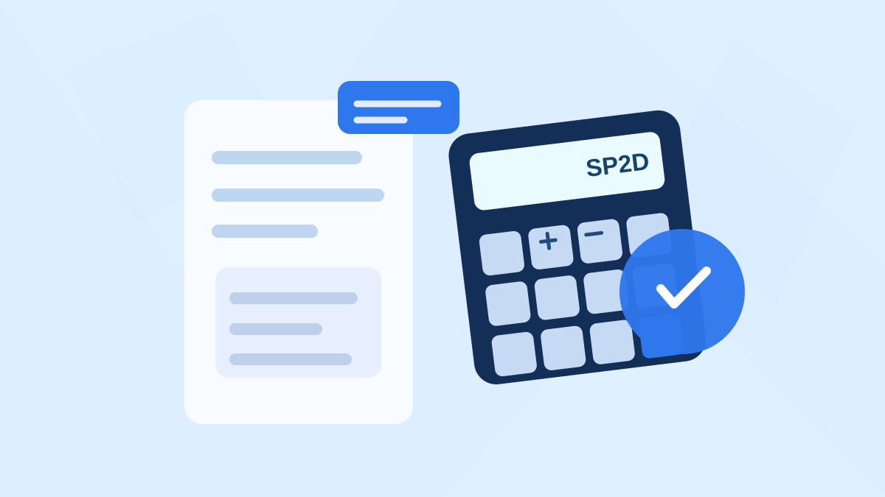

Kalkulator Potongan Pajak SPJ, SPM, dan SP2D 2026: Barang, Jasa, Fisik
Satu tagihan belanja pemda bisa memiliki perlakuan pajak yang berbeda. Kenali cara memilih jenis potongan dan uji contoh barang, jasa, fisik, serta honorarium sebelum berkas SPM diajukan.

Disusun berdasarkan aturan perpajakan yang berlaku dan diperiksa pada 28 Oktober 2026. Hasil perhitungan tidak menggantikan bukti pungut atau penetapan pejabat berwenang.
Versi Mudahnya
Pilih dulu transaksi dan penerimanya: barang, jasa orang pribadi, jasa badan, pekerjaan konstruksi, atau sewa. Setelah itu pastikan mekanisme pembayaran, status pajak penerima, nilai sebelum PPN, dan pengecualian yang berlaku. Baru hitung potongan dan uang yang akan ditransfer. Kalkulator ini simulasi, bukan bukti potong.
PPh 21, 22, 23, PPh final, PPN, dan beberapa potongan kas.
Objek belanja, pihak penerima, faktur, status pajak, serta LS/UP/KKP.
Estimasi potongan dan dana bersih, disertai batasan kasus khusus.
Bukti kas, kuitansi, kontrak, dan SPM punya cerita yang berbeda. Pajak tidak bisa diputuskan hanya dari nama rekening. Untuk satu honorarium penerjemah, misalnya, perlakuan PPh 21 dapat berbeda jauh dari jasa yang ditagihkan oleh perusahaan.
Mengapa potongan pajak SPJ, SPM, dan SP2D sering berbeda?
Di OPD, istilah “pajak SPJ” biasanya dipakai untuk menyebut potongan pada dokumen pertanggungjawaban belanja. Padahal SPJ adalah kelengkapan pertanggungjawaban, SPM merupakan perintah membayar, sedangkan SP2D merupakan dokumen pencairan berdasarkan mekanisme perbendaharaan. Kewajiban PPh dan PPN bersumber dari jenis transaksi dan aturan perpajakan, bukan muncul karena berkasnya bernama SPJ atau SP2D.
Misalnya Dinas A membeli barang dari toko, membayar jasa penerjemah lepas, dan melunasi pekerjaan perbaikan gedung. Ketiganya dapat dibiayai APBD, tetapi objek pajaknya tidak sama. Pembelian barang lazimnya diperiksa dari sisi PPh Pasal 22; jasa orang pribadi tertentu dapat menjadi PPh Pasal 21; sedangkan pekerjaan konstruksi bisa dikenai PPh final dengan tarif menurut kualifikasi penyedia. Jika petugas langsung memilih PPh 23 untuk semua transaksi bernama “jasa”, hasilnya dapat keliru.
Untuk verifikasi SPM/SP2D, periksa dokumen dasar transaksi lebih dahulu. Kode rekening hanya membantu mengidentifikasi belanja; ia tidak cukup untuk memastikan pajak yang wajib dipotong.
Pajak apa saja yang perlu dipertimbangkan?
Berikut titik awal pemeriksaan umum, bukan daftar tarif yang otomatis berlaku pada setiap kuitansi. Pengecualian berdasarkan jenis barang/jasa, status penerima, dan cara pembayaran tetap harus diuji.
| Objek pembayaran | Potongan yang diperiksa | Kunci verifikasi |
|---|---|---|
| Pembelian barang | PPh 22; PPN bila terutang | Nilai transaksi, ambang Rp2 juta, pengecualian, siapa pemungut |
| Jasa badan nonkonstruksi | PPh 23; PPN bila terutang | Jenis jasa, dasar bruto tidak termasuk PPN, identitas penyedia |
| Penerjemah, narasumber lepas, profesional orang pribadi | PPh 21 Bukan Pegawai | Status penerima, hubungan kerja, DPP 50% bruto dan tarif Pasal 17 |
| Jasa konstruksi/fisik | PPh final Pasal 4 ayat (2); PPN bila terutang | Jenis pekerjaan, SBU/SKK atau kualifikasi penyedia, termin |
| Sewa tanah/bangunan | PPh final Pasal 4 ayat (2) | Objek sewa dan komponen nilai sewa |
| Sewa peralatan/kendaraan tertentu | PPh 23 | Apakah benar sewa harta selain tanah/bangunan, bukan jasa lain |
PPN tidak sama dengan PPh. PPN berkaitan dengan penyerahan barang atau jasa kena pajak, sedangkan PPh memotong penghasilan penerima. Untuk sebagian besar barang/jasa nonmewah yang memakai skema umum, PPN dihitung efektif 11% dari harga jual berdasarkan PMK 131/2024. Ada pula skema PPN dengan dasar pengenaan khusus yang tidak boleh dipukul rata. PPN yang terutang juga tidak selalu dipungut instansi; mekanisme pembayarannya perlu dilihat.
Contoh hitung yang sering dijumpai
Contoh 1: Honorarium penerjemah Rp5.100.000
Seorang penerjemah bekerja secara pribadi sebagai Bukan Pegawai dan menerima honorarium Rp5.100.000. Dalam skema PMK 168/2023, dasar pemotongan PPh 21 adalah 50% dari bruto, yaitu Rp2.550.000. Ketika berada pada lapisan tarif pertama Pasal 17 UU PPh sebesar 5%, PPh 21 menjadi Rp127.500; honorarium bersih adalah Rp4.972.500. Ini bukan TER bulanan. Jika status penerima ASN atau hubungan kerjanya berbeda, penanganannya harus diperiksa lagi.
Contoh 2: Pembelian barang Rp10.000.000
Andaikan instansi melakukan belanja barang Rp10 juta sebelum PPN, bukan transaksi yang dikecualikan, dengan pemungutan PPh 22 pada ketentuan umum 1,5%, maka PPh 22 adalah Rp150.000. Apabila penyerahan terutang PPN nonmewah dengan perhitungan efektif 11%, PPN-nya Rp1.100.000. Nilai tagihan termasuk PPN menjadi Rp11.100.000. Jika PPN juga dipungut instansi, pembayaran ke rekanan dalam simulasi menjadi Rp9.850.000. Namun angka ini tidak cocok dipakai begitu saja untuk skema E-Katalog melalui Pihak Lain.
Contoh 3: Pekerjaan konstruksi Rp100.000.000
Untuk pekerjaan konstruksi bersertifikat dengan kualifikasi usaha kecil, tarif PPh final pada skema umum PP 9/2022 adalah 1,75% dari nilai pembayaran yang relevan sebelum PPN. Pada dasar Rp100 juta, PPh final ilustratif sebesar Rp1.750.000. Periksa terlebih dahulu SBU/SKK dan kategori pekerjaan karena tarif konsultansi konstruksi atau pekerjaan terintegrasi tidak selalu sama. Retensi dan uang muka juga dapat membuat perlakuan tagihan termin lebih rumit daripada contoh tunggal.
Setiap angka di atas memakai asumsi tertentu. Bila dokumen faktur, identitas rekanan, atau mekanisme pembayaran berbeda, potongannya bisa berubah. Periksa apakah pajak sudah dipungut pihak lain agar tidak ada pemungutan ganda.
Cara menggunakan kalkulator potongan SPJ 2026
Mulailah dari mengidentifikasi objek belanja, bukan memilih tarif yang paling sering digunakan di tahun sebelumnya. Pada halaman kalkulator, pilih kategori barang, jasa, konstruksi, honorarium, atau sewa. Masukkan nominal tagihan dan tentukan apakah angka tersebut sudah termasuk PPN. Sistem akan menampilkan kondisi umum pemungutan serta petunjuk perhitungan.
Langkah berikutnya ialah menetapkan status penerima. Penyedia berbentuk badan berbeda dengan penerjemah lepas orang pribadi. Untuk pekerjaan konstruksi, cocokkan dokumen kualifikasi dan sertifikasi. Untuk honorarium, periksa apakah penerima Bukan Pegawai, peserta kegiatan, atau PNS yang menerima honorarium APBD dengan aturan khusus. Kesalahan memilih status ini akan membuat hasil hitungan tampak rapi tetapi dasar pajaknya salah.
Apabila ada retensi, pengembalian uang muka, atau denda, masukkan sebagai potongan pembayaran terpisah. Potongan kas tersebut tidak otomatis mengubah dasar pengenaan PPh dan PPN. Sebelum menggunakan hasil simulasi, periksa kembali kontrak, berita acara, bukti tagihan, faktur, serta bukti pungut pajak. Buka kalkulator potongan SPM/SP2D & SPJ 2026 →
Checklist untuk bendahara, PPK, dan verifikator
- Periksa dasar tagihan: kontrak, surat pesanan, bukti penerimaan/BAST, dan nilai yang benar-benar dibayar.
- Periksa objek pajak: barang, jasa profesional, jasa badan, konstruksi, sewa, atau honorarium.
- Verifikasi penerima: NPWP/NIK, status PKP, usaha kecil, dokumen sertifikasi, serta SKB/Suket yang relevan.
- Tentukan pemungut: instansi, penyedia, atau Pihak Lain yang ditunjuk pada sistem pengadaan.
- Cegah duplikasi: cocokkan bukti pungut yang telah diterbitkan dan potongan yang akan dicatat pada SPM/SP2D.
- Periksa pembayaran netto: pajak dipisahkan dari retensi, denda, atau kewajiban kontraktual lain.
Pertanyaan yang sering ditanyakan
Apakah semua honorarium memakai TER?
Tidak. Bukan Pegawai seperti penerjemah lepas yang memenuhi klasifikasi tertentu dihitung dengan Pasal 17 atas DPP 50% bruto. TER bulanan dipakai pada kelompok penerima dan kondisi yang memang ditetapkan oleh peraturan, bukan otomatis pada setiap honorarium APBD.
Apakah pembelian barang selalu dipotong 1,5%?
Tidak. Ada ketentuan batas dan pengecualian pemungutan serta mekanisme transaksi melalui Pihak Lain yang ditunjuk. Jenis transaksi dan siapa pemungutnya harus diverifikasi. Bagi penyedia E-Katalog, tersedia panduan pajak E-Katalog V6 khusus.
Apakah hasil simulasi bisa langsung menjadi dasar penerbitan SP2D?
Tidak. Kalkulator membantu memeriksa kewajaran hitungan dan menyiapkan pertanyaan verifikasi. Keputusan pajak yang dipotong mengikuti ketentuan resmi, dokumen transaksi yang sah, dan pengendalian pada instansi pembayar.
Sumber resmi yang digunakan
- DJP: Pemungutan PPh 22 instansi pemerintah.
- PMK 51 Tahun 2025: PPh 22 pembelian barang.
- PMK 168/2023, lampiran penghitungan PPh 21.
- DJP: Penjelasan PPN PMK 131/2024.
- DJP: Tabel tarif PPh final jasa konstruksi.
- PMK 58/2022: Pajak transaksi melalui Pihak Lain pengadaan pemerintah.
Terakhir diperiksa 28 Oktober 2026. Contoh dan kalkulator merupakan edukasi independen; bukan ketetapan resmi pajak, instruksi pengadaan, atau pengganti review BPKAD/OPD.
Apakah artikel ini membantu?
Komentar rekan ASN
Tanggapi isi artikel atau berbagi pengalaman yang relevan. Tidak perlu akun dan email.
Komentar ditinjau sebelum ditampilkan. Jangan kirim NIP, rekening, kata sandi, dokumen pekerjaan, atau data pribadi. Baca kebijakan privasi.
Memuat komentar…